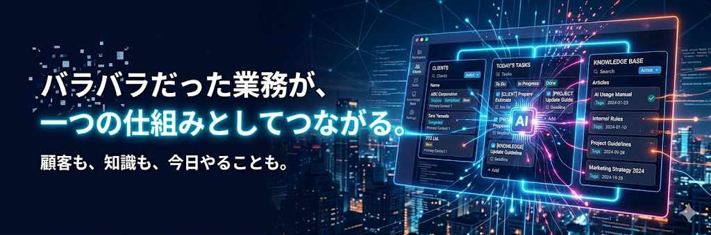

Notion構築 ・ AIエージェント設計 ・ 業務基盤の設計から実装・運用まで

個人事業主・小規模チーム向けに設計した、Notion × AIの業務基盤。CRM・タスク管理・ナレッジベース・AIエージェント・経理を統合した経営基盤を、自ら設計・構築・運用している。

Notion BizBase — これ1つで経営が回る理由
企業DB × 名刺DB × 商談DB × 活動ログ × 企業サービスDBをリレーションで統合。顧客ページを開くだけで「誰に・いつ・何を提案したか」が一目瞭然。
ゴールDB → プロジェクトDB → タスクDBの3層構造。すべてのタスクがゴールに紐づく。「忙しいのに成果が出ない」を根本から解消。
ナレッジDB × タグ検索DB × 日報DBで知見・ノウハウ・資料をタグで横断検索。使うほど価値が増す情報資産。
AI参照ナレッジDB × AI作業ログDBでスキル・マニュアルを管理。マスターAI + 特化型4体がメンション一発で起動。
請求・売上明細DB × 支出明細DB × 売上カテゴリマスタ × 支出カテゴリマスタ × 収支集計DBで経営数字を一元管理。


すべてのDBは「ゴール → プロジェクト → タスク」の一本線で接続されている。タスクがゴールに紐づいていない状態＝設計が破綻している状態。BizBaseは「今日やるべきこと」がゴールから逆算で決まる構造になっている。
商談ページでタスクを追加すると、そのタスクは商談情報・プロジェクト・ゴールまで自動でリレーションされる。手動で紐づける必要がない。入力の手間が大幅に減り、どこからでも関連情報にたどり着ける設計。
AIに仕事を任せるには、AIがデータにアクセスできる構造が必要。BizBaseは全DBをAIエージェントが横断参照できる設計になっている。だから「蓄積するほどAIが賢くなる」が実現する。
| 機能 | Excel/スプシ | SaaS CRM | kintone | Notion BizBase |
|---|---|---|---|---|
| CRM（顧客管理） | △ | ◎ | △ | ◎ |
| タスク・PJ管理 | △ | △ | ○ | ◎ |
| ナレッジベース | ✕ | △ | △ | ◎ |
| 経理管理 | △ | ✕ | △ | ◎ |
| AI連携 | ✕ | △（高額） | ✕ | ◎（5体搭載） |
| カスタマイズ性 | ○ | △（開発者必要） | ○ | ◎ |
| 導入コスト | ○（安い） | ✕（高額） | ○ | ◎ |
| 自走しやすさ | △ | ✕ | ○ | ◎ |

業務フローのヒアリングから、DB設計・リレーション・ビュー・ダッシュボード構築まで一貫して対応。テンプレートの横流しではなく、業務に合わせたオーダーメイド設計。
NotionのカスタムAIエージェント・プロンプト設計・スキル体系設計。AIが業務データを参照して提案・レポート生成・自動化を行う仕組みを構築。
構築して終わりではなく、実際の運用に合わせた調整・改善を継続支援。「自走できる状態」をゴールに、定着するまで伴走。
現状の業務フロー・課題・ゴールを整理。「何をどう整理すればいいかわからない」状態でもOK。
ヒアリング内容をもとに、DB設計・全体構成・AIエージェント設計を提案。設計書を見せながら方向性を確認。
Notion上にDB・ビュー・ダッシュボード・AIエージェントを構築。途中経過を共有しながら進行。
実際にデータを入れて動作確認。運用に合わせた微調整後、操作レクチャーとともに納品。
定着するまで伴走。DB追加・エージェント構築・構造変更にも対応。
学習塾講師 × Notion × AI 業務基盤設計
「想像力 × AI = 圧倒的な創造力」をコンセプトに、クライアントのゴールから逆算した業務基盤をNotionで設計している。
学習塾で講師をしながら、自分自身の業務を仕組み化するためにNotionとAIを使い始めた。顧客管理、タスク管理、ナレッジ蓄積、経理——全部バラバラだった業務を、Notionひとつに統合。そこにAIエージェントを載せることで「Notionを開けば、今日何をすべきかわかる」状態を作り上げた。
この経験をもとに、同じ課題を抱える事業者向けにNotion構築代行を始めた。テンプレートの横流しはしない。業務をヒアリングし、課題に合わせたオーダーメイドの設計を行う。
納品して終わりではなく、自走できる状態をいっしょに作る。
DB設計 / リレーション / ビュー / ダッシュボード
Notion AIカスタムエージェント / プロンプト設計 / スキル体系設計
CRM / タスク管理 / ナレッジ管理 / ゴール管理
Notion API / Claude Code / Cursor